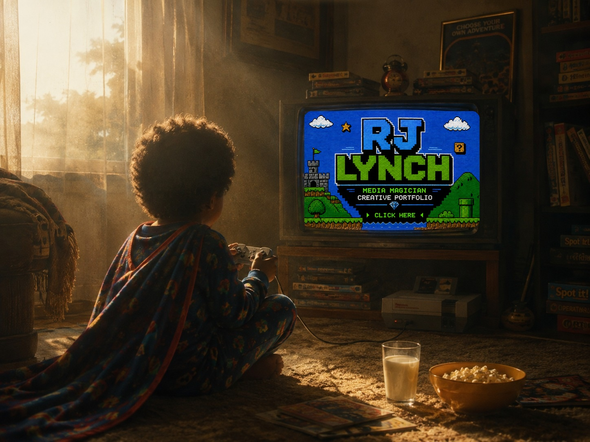

Turning a competitor's shortage into a two-year brand opportunity.
While working as TABASCO's first Content Strategist, I noticed something interesting happening around a competitor: Huy Fong Foods was experiencing a massive Sriracha shortage. Bottles were reselling for $50+, news coverage was exploding, and every new mention of the shortage created another spike in conversation.
There was just one opportunity everyone seemed to be overlooking: TABASCO made Sriracha, too.
For $12, I purchased Sriracha-Shortage.com and built a newsjacking strategy designed to insert TABASCO directly into the conversation every time the shortage resurfaced. We supported it with a flight of reactive content and short films that playfully trolled the competition and gave consumers an alternative when their usual bottle disappeared.
The idea turned a competitor's supply problem into an ongoing cultural moment for TABASCO, helping propel TABASCO Sriracha to become the #1 Sriracha in the U.S. for the following two years.
Building a TikTok presence without the $200K launch plan.
We didn't launch TABASCO on TikTok with a campaign. We launched it with a storyline, and let the internet write the next episode.
When TABASCO was considering TikTok, we were advised that a proper launch would require a $200K+ paid investment. Then a creator went viral for filling a tiny TABASCO bottle with Frank's RedHot, and I saw another way in.
I developed a reactive strategy built around moves and countermoves designed to provoke the next chapter. We reacted to the creator. She reacted to us. Frank's joined in. Soon, a single TikTok had become an episodic, audience-driven brand rivalry.
To sell the idea into the client, I built a decision tree mapping our potential moves and predicting how the creator would react to each one. She followed the tree with 75% accuracy. That approach became what HUNTER now calls the "Breadcrumbing Strategy": anticipating reactions without scripting them, then leaving just enough behind to inspire the internet's next move.
When the creator compared TABASCO and Frank's fighting for her affection to Twilight, we leaned in, changing our social identity, sending increasingly elaborate gifts and surprises, throwing her a TABASCO-themed party, and adapting our next move based on what happened online.
The Breadcrumbing Strategy became a reactive social framework HUNTER continued using long after the war ended.
What if the best way to cool down was to heat things up?
The campaign started with a cultural contradiction: some of the hottest countries in the world also eat some of the spiciest food. I developed a theory around the biology behind it, that spicy food makes you sweat, and sweat helps cool your body down.
That became "Beat the Heat," a summer platform encouraging people to cool down by eating TABASCO.
To bring the idea to life, we once again used our Breadcrumbing Strategy, partnering with viral ice cream creator Catch'n Ice Cream, known for inventing unexpected flavors. Rather than simply paying him to unveil a TABASCO product, we planted the seed of making spicy ice cream and built a story around his attempts to get it right.
After a series of trial-and-error videos, the storyline brought him to the home of TABASCO itself, where he learned from the experts and tried the jalapeño ice cream made on Avery Island.
Armed with some newfound spice expertise, he returned home and created Guac Serve: a guacamole-inspired ice cream built to Beat the Heat.
We launched it through a collaborative pop-up that drew lines around the block, turning an unexpected biological insight into a physical product, and a social storyline people could follow from first experiment to first scoop.
Turning a TikTok behavior into a paint discovery tool.
Color analysis had become a massive social trend, with people discovering whether they were a Winter, Spring, Summer, or Fall, and even heading into hardware stores to compare themselves against paint swatches.
Instead of simply participating in the trend, we turned the behavior into a Benjamin Moore property.
I developed Benjamin Moore Match, a social series that paired consumers with a professional color analyst to determine their color season and then matched those results to Benjamin Moore paint colors. We surrounded the idea with a broader 360° social content flight designed to make paint education feel native to the way people consume content today, from educational short-form videos highlighting paint quality to highly tactile macro photography and ASMR-inspired content.
The result was a social approach that connected product education to existing cultural behaviors rather than asking audiences to suddenly care about paint.
Building an in-house content engine, and getting behind the camera when necessary.
At Hunter, I led the agency's first dedicated Content Studio, creating a more agile way to concept, produce, and execute creative across the agency's roster of brands.
The studio operated across the entire content ecosystem: organic social, paid media, OOH, corporate and LinkedIn content, reactive creative, campaign extensions, and original productions. Projects included a comedic Mucinex spot featuring Olympian Jack Hughes, an International Delight content flight starring Paris Hilton, and the TABASCO x Tinx hot sauce dressing launch, alongside numerous other projects spanning paid, organic, and out-of-home.
My role intentionally crossed disciplines. Depending on the project, I could move from strategist to creative lead to art director to director, and when the idea called for it, pick up the camera and shoot or edit the content myself.
The goal was simple: build a studio capable of moving at the speed of culture without sacrificing the thinking or craft behind the work.
I couldn't find a job during COVID. So I turned finding one into a campaign.
In 2020, I was looking for work in an almost impossible job market. Rather than sending applications into the void, I decided to treat my own job search like a PR campaign.
I launched a TikTok series called Unsolicited PR Advice, where I used my PR background to create mock strategies responding to corporate crises, cultural moments, and social media events, before everyone else started doing it. I supplemented the series with occasional lifestyle content and used the account as a real-time demonstration of how I thought about brands, culture, and the internet.
Within six months, I built an audience of more than 300,000 followers.
More importantly, the campaign did exactly what it was designed to do. It turned my job search into proof of my ability, eventually leading to three job offers. I chose Hunter PR, where I became the agency's first Content Strategist.
Then I had to figure out how.
In 2019, I was offered the role of PR Director for the Houdini Museum of New York, a tiny museum with an incredible story, but very little public awareness.
During my interview, I told the owner I would get the museum into The New York Times. He took a chance and hired me.
I needed a story journalists would actually care about, so I found one hiding in plain sight: me. By coincidence, I came from the same town as Harry Houdini, and I was a magician myself. I turned that connection into a compelling headline and spent two months relentlessly pitching the story.
Our first bite was The New York Times.
Following the article, museum revenue increased by 500%, and I leveraged that momentum into additional coverage from Complex, History Channel, AM New York, FOX, and Rolling Stone.
It became an early lesson that has followed me throughout my career: sometimes the story isn't obvious. You have to find the through-line, make people care, and pitch the hell out of it.
One piece of earned media unexpectedly turned into a three-year journey toward television.
After seeing my New York Times story, production company Karga approached me about developing a television show. I pitched a concept exploring the history and world of magic through the lens of my own life, and together we began taking the project to networks and streamers ranging from MTV to Netflix.
Netflix ultimately gave me the extraordinary opportunity to produce a pilot, an unusual leap for someone completely new to television production. What followed was a nearly three-year process of writing, developing, producing, pitching, and learning an entirely new industry from the inside.
The project ultimately wasn't picked up for series, but it unexpectedly influenced the next stage of my career.
While negotiating around the project, I was told that building a social following could strengthen my position as on-camera talent. So I approached the problem the way I knew how: like a PR strategist.
I started building an audience.
That decision eventually became my 300K+ TikTok platform, helped launch my career in social strategy, and fundamentally changed the direction of my career.
Where I learned how to find the story before I had big budgets or big brands.
Early in my career, I worked in communications and PR roles supporting nonprofit organizations including Make-A-Wish, The Salvation Army, and a local homeless shelter.
With limited resources, earned attention mattered. I built and worked my media lists, developed stories journalists could actually use, secured local coverage, and served as an official spokesperson during television appearances.
That experience became foundational to the way I still approach creative strategy today: understand what makes a story interesting, find the human truth inside it, and give people a reason to pay attention.
Bringing a social-first mindset to one of advertising's most iconic creative agencies.
At Crispin Porter + Bogusky, I was hired to lead social across three major accounts: Pantene, P&G Easy Ups, and DSW.
My focus was developing platform-native short-form creative that could work across both organic and paid social, while building repeatable series and formats rather than simply adapting traditional advertising for feeds.
For DSW, I helped lead the brand's social rebrand and developed original series including $111 Haul and Dress From the Sole, giving the brand recognizable formats designed specifically for social.
For Pantene, I developed custom social-first series and content designed around the behaviors and formats audiences were already engaging with.
And for P&G Easy Ups, I helped launch the brand's Instagram presence, working with popular parent creators to produce paid creative that could be transformed into organic cutdowns and extended across the social ecosystem.
Across all three accounts, the goal was the same: create work built for the platform first, rather than advertising that happened to end up there.
Available for creative direction, social strategy, and content leadership.
My path was unconventional, so I built the proof myself: a museum into the Times, a pilot to Netflix, a hot sauce into the number one Sriracha in America, and an audience from zero.
▶ PRESS START ◀